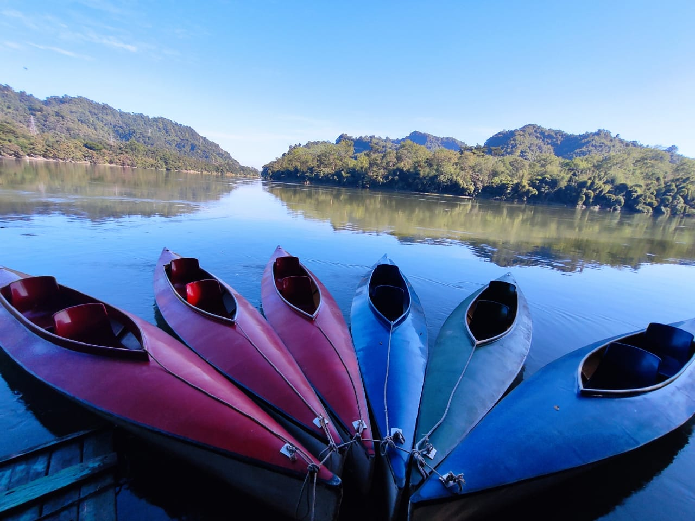
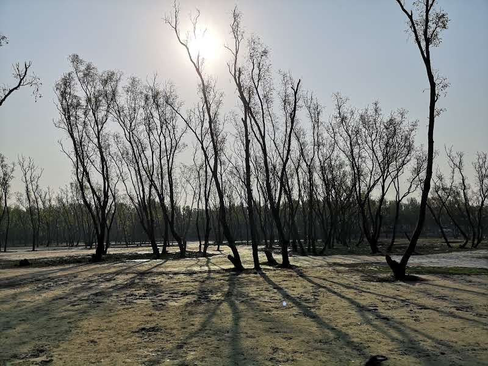

Travelling Blog

Karnaphuli River
Karnaphuli is the largest and most important river in Chattogram and the Chattogram Hill Tracts. It is a 667-metre wide river.

Kaptai Lake
Kaptai Lake is the largest man made lake in Bangladesh. It is located in the Kaptai Upazila under Rangamati District of Chittagong Division.

Halishahar Sea Beach
Halishahar Beach is located in Chittagong. Besides this nature attraction, there are seventeen more nature attractions listed in Chittagong.